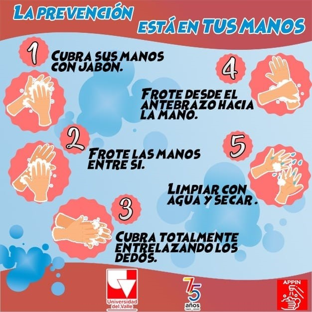

<ion-header>
  <ion-toolbar>
        
  </ion-toolbar>
</ion-header>
<br>
<br>
<ion-content>
  <div class="slide-img-padding">
     
  </div>
  
  <div>
    <ion-tabs>
      <ion-tab-bar slot="bottom">
        <ion-tab-button color="danger" (click)="ingresarPaginaRegistroSintomas()">
          <ion-icon name="thermometer-outline" color="danger"></ion-icon>
          <ion-label>Sintomas</ion-label>
          <ion-badge color="danger">39°</ion-badge>
        </ion-tab-button>
    
        <ion-tab-button  (click)="ingresarPaginaLavadoManos()">
          <ion-icon name="hand-left-outline" color="danger"></ion-icon>
          <ion-label>Lavado de manos</ion-label>
        </ion-tab-button>
    
        <ion-tab-button  (click)="ingresarPaginaInicio()">
          <ion-icon name="home-outline" color="danger"></ion-icon>
          <ion-label>Inicio</ion-label>
        </ion-tab-button>
      </ion-tab-bar>
    </ion-tabs>
  </div>
  </ion-content>